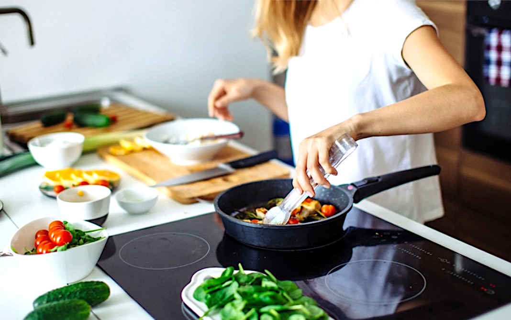

O sanduíche perfeito, um verdadeiro clássico de NYC
Sanduíche de presunto parma: essa é uma receita em que um pão ciabatta é recheado com presunto parma, tomate, manjericão e alguns temperos. Os ingredientes usados são poucos, mas são suficientes para um lanche super saboroso.

Deixe-me falar sobre este bife
Bife Wellington: prato tradicional da culinária inglesa, o segredo do bife Wellington é ter o exterior da massa bem crocante e o interior da carne bem rosado. Confira o passo a passo e acompanhe essa delícia com um bom vinho!

Cerejas, interrompidas
Geleia de cereja simples: preparada com cereja, maçã, suco de limão e açúcar, essa geléia tem um vermelho profundo e lindo. É superfácil de fazer: basta preparar uma calda de açúcar com todos os ingredientes e deixar reduzir. Essa é uma ótima forma de aproveitar as cerejas que estão ficando muito maduras.

Mais uma vez, Vinho Robusto e Massa de Legumes
Macarrão com legumes e carne moída . Em apenas dois minutos você aprende como preparar um macarrão com repolho, brócolis, tomate, carne moída, cebola e cheiro-verde. Além disso, a massa é integral, o que ajuda na sensação de saciedade após comer.

Tudo que eu preciso é um picolé
Picolé de manga: esse é um picolé natural feito apenas com manga congelada. Além de refrescante, é delicioso e auxilia em uma alimentação saudável. Não é necessário colocar açúcar, mas, caso queira, você pode adicionar.

Salmão para sua pele
Salmão na crosta de nozes e especiarias. Essa é uma receita elegante e sofisticada, mas que conta com um preparo simples. O salmão é assado no forno e ganha uma crosta crocante feita com nozes, temperos e farinha panko.
O sanduíche perfeito, um verdadeiro clássico
Sanduíche de almôndegas: essa é uma receita que já apareceu na série de televisão Friends, era o sanduíche preferido do personagem Joey. O lanche é composto por um pão recheado com almôndegas ao molho e mussarela de búfala. Para deixar sua refeição ainda mais gostosa, a sugestão é levar essa combinação ao forno.

Le French
Pão de minuto: essa é uma receita que precisa de aproximadamente 25 minutos para ficar pronta, por isso, é uma ótima opção para quando você quer preparar um pão caseiro, mas não quer esperar a massa crescer.
Sobre a Cozinheira, a Jéssica

I am Who I Am!
With Passion For Real, Good Food
“Estava trabalhando há 11, 12 anos para outras pessoas. Empreender foi algo que me pareceu natural mesmo: já havia decidido que queria abrir meu próprio negócio. Eu trabalho mais na parte de criação de conceitos e de linguagem de todos os restaurantes. Ou seja: analiso o que vai influenciar a cozinha nessa época e nesse ano; penso em que histórias vamos contar e quem vamos conhecer culturalmente, para trazer conteúdo aos nossos restaurantes; elaboro os cardápios; organizo o treinamento que damos à equipe de cozinha; mantenho o relacionamento com os fornecedores; e vejo como vamos fazer a nossa divulgação.”